Normalized Burn Ratio
Josh Carrell - Utah State University, MS Ecology
Last Update: May 13, 2022
Fire and Remote Sensing
Fire, particularly wildland fire, has long been studied using remote sensing. It is quite useful in determining fire spatial extent, monitoring regrowth post-fire, and characterizing fire severity. Using various sensors, remote sensing based studies of fire can range from a single fire to the long term monitoring of global fire occurrence.

The Camp wildfire of 2018 from the view of Landsat 8 sensors. The Camp fire was the deadliest fire in recent history, taking the lives 85 individuals.
Given warming climates, drier conditions, and more people living near wildland-urban interfaces, large-scale fire may become more common and more deadlier. Fire, however, is an important ecological process and more frequent low-severity fires are healthy for many forests. Given the issues that face humans and fires, and fires and forests, a strong knowledge of remote sensing is important for anyone wanting to study fire.
Normalized Burn Ratio (NBR)
There are a lot of studies on fire and remote sensing, we are just going to cover 1 common algorithm for characterizing fire severity (How intense a fire burns through vegetation). The algorithm we will cover is called the Normalized Burn Ratio (NBR). NBR is used to identify burned areas and provide a measure of burn severity. To perform this, you need to have imagery that contains band in the Near-Infrared (NIR), a band within 760 - 900 nm, and Shortwave Infrared (SWIR), a band within 2080 - 2350 nm on the electromagnetic spectrum. The equation is as follows:
NBR = ((NIR - SWIR)/(NIR + SWIR))
Difference Normalized Burn Index
The Difference Normalized Burn Index (dNBR) is creates a measure of severity based upon pre-fire and post-fire vegetation conditions. Ideally to calculate dNBR, you will have imagery before very soon before the fire and very soon after the fire is out. The equation is as follows:
dNBR = Pre-fire NBR - Post-fire NBR
Pine Gulch Fire
Our study fire for this analysis and coding guide is the Pine Gulch fire of July 2020, located north of Grand Junction, Colorado.

library(dplyr)
library(terra)
library(sf)
library(raster)
states <- sf::st_read("D:/NR_6950/data/sf_datasets/state.shp")## Reading layer `state' from data source `D:\NR_6950\data\sf_datasets\state.shp' using driver `ESRI Shapefile'
## Simple feature collection with 56 features and 4 fields
## Geometry type: MULTIPOLYGON
## Dimension: XY
## Bounding box: xmin: -179.1686 ymin: -14.59976 xmax: 179.7487 ymax: 71.38961
## Geodetic CRS: WGS 84Colorado <- states %>%
filter(STATE == "Colorado")
Counties <- sf::st_read("D:/NR_6950/data/sf_datasets/tl_2021_us_county.shp")## Reading layer `tl_2021_us_county' from data source
## `D:\NR_6950\data\sf_datasets\tl_2021_us_county.shp' using driver `ESRI Shapefile'
## Simple feature collection with 3234 features and 17 fields
## Geometry type: MULTIPOLYGON
## Dimension: XY
## Bounding box: xmin: -179.2311 ymin: -14.60181 xmax: 179.8597 ymax: 71.43979
## Geodetic CRS: NAD83mesa <- Counties %>%
filter(NAME == "Mesa")
plot(Colorado$geometry, main = "Mesa County, CO")
plot(mesa$geometry, add = T, col = "Blue")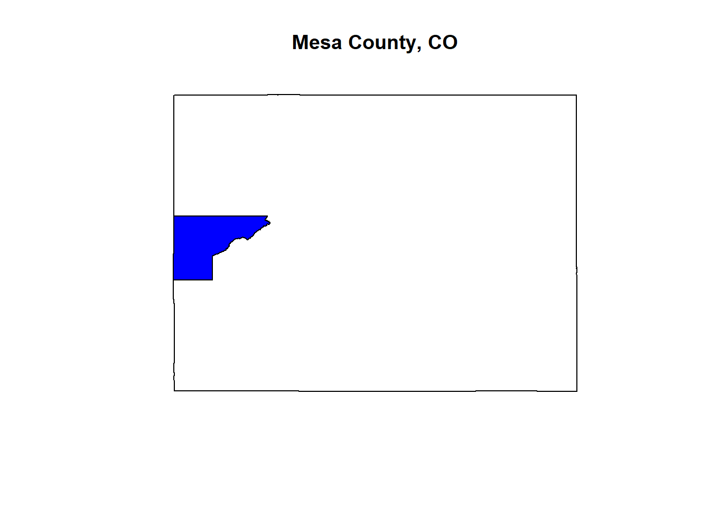
Coding Guide
Libraries
This analysis can be done completely using the package terra. However, we will jump around a few different packages for practice and to show you can do things a number of ways.
Let’s load in our libraries:
dplyr
terra
sf
raster
Data
The data provided to you this week is Landsat 8 imagery covering the Pine Gulch fire. Since the fire burned in late 07/20, I have pre-fire imagery from 06/20 and post-fire imagery from 09/20. I also have included a shapefile that contains the extent of North American wildfires in recent history. You’ll use this to select the area and location of a fire of your choice (this weeks assignment).
Let’s take a look at the data.
List files
list.files("D:/NR_6950/data/DNBR") # see what imagery we have## [1] "B1_post.TIF" "B1_pre.TIF" "B2_post.TIF" "B2_pre.TIF" "B3_post.TIF"
## [6] "B3_pre.TIF" "B4_post.TIF" "B4_pre.TIF" "B5_post.TIF" "B5_pre.TIF"
## [11] "B6_post.TIF" "B6_pre.TIF" "B7_post.TIF" "B7_pre.TIF" "fires"Wildfires
fires <- sf::st_read("D:/NR_6950/data/DNBR/fires/FH_Perimeter.shp")## Reading layer `FH_Perimeter' from data source
## `D:\NR_6950\data\DNBR\fires\FH_Perimeter.shp' using driver `ESRI Shapefile'
## Simple feature collection with 9652 features and 108 fields (with 4 geometries empty)
## Geometry type: MULTIPOLYGON
## Dimension: XY
## Bounding box: xmin: -165.8152 ymin: 13.38021 xmax: 144.6906 ymax: 69.05174
## Geodetic CRS: WGS 84PG <- fires %>%
filter(poly_Incid == "Pine Gulch") # filter fire shapefile to pine gulch only
plot(PG$geometry) # initial look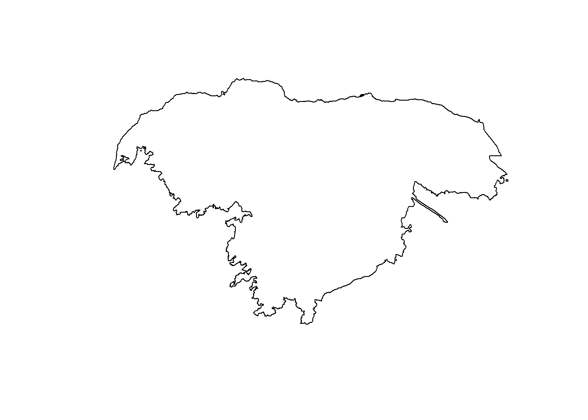
PG <- sf::st_transform(PG, 32612) # to match the imagery CRS
PG_v <- as(PG, "SpatVector") # turn it into a spatvector to work with spatrasterPre-fire Vegetation Analysis
The band combination [4,3,2] produces an image in which vegetation is bright Red (as it absorbs green and blue). It can be incredibly useful in seperating imagery from other objects in the image.
pre_2 <- terra::rast("D:/NR_6950/data/DNBR/B3_pre.tif") # band 3
pre_3 <- terra::rast("D:/NR_6950/data/DNBR/B4_pre.tif") # band 4
pre_4 <- terra::rast("D:/NR_6950/data/DNBR/B5_pre.tif") # band 5
pre_nat <- c(pre_2, pre_3, pre_4) # stack
pre_nat <- terra::crop(pre_nat, PG_v) # crop to the fire to minimize data used
plotRGB(pre_nat, 3, 2, 1, stretch = "lin") # plot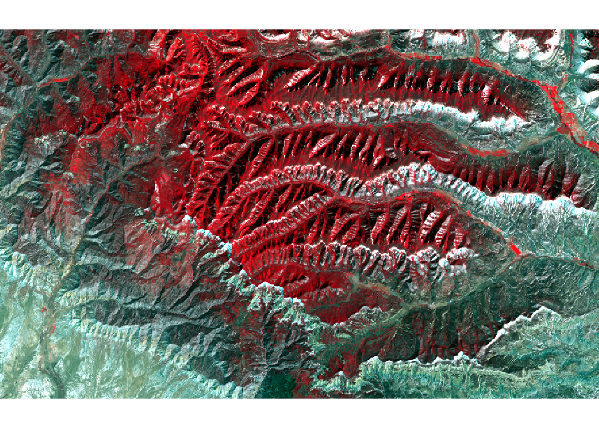
Post-fire Vegetation Analysis
# follow same process as pre-fire
post_2 <- terra::rast("D:/NR_6950/data/DNBR/B3_post.tif")
post_3 <- terra::rast("D:/NR_6950/data/DNBR/B4_post.tif")
post_4 <- terra::rast("D:/NR_6950/data/DNBR/B5_post.tif")
post_nat <- c(post_2, post_3, post_4)
post_nat <- terra::crop(post_nat, PG_v)
plotRGB(post_nat, 3, 2, 1, stretch = "lin")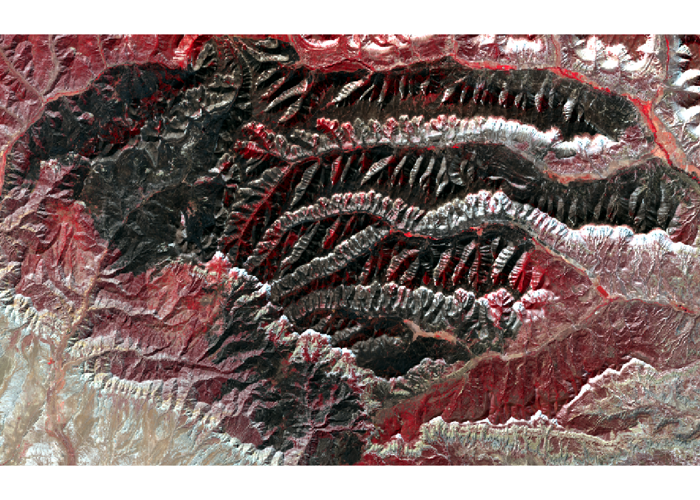
Organize Imagery
Let’s organize the imagery into to pre and post-fire so that we can create the NBR for each.
pre_5 <- terra::rast("D:/NR_6950/data/DNBR/B5_pre.tif") # NIR
pre_7 <- terra::rast("D:/NR_6950/data/DNBR/B7_pre.tif") # SWIR 2
post_5 <- terra::rast("D:/NR_6950/data/DNBR/B5_post.tif") # NIR
post_7 <- terra::rast("D:/NR_6950/data/DNBR/B7_post.tif") # SWIR 2
PG_pre <- c(pre_5, pre_7) # stack
PG_preC <- terra::crop(PG_pre, PG_v) # Crop to fire
PG_post <- c(post_5, post_7)
PG_postC <- terra::crop(PG_post, PG_v)
terra::plot(PG_preC) # initial look at bands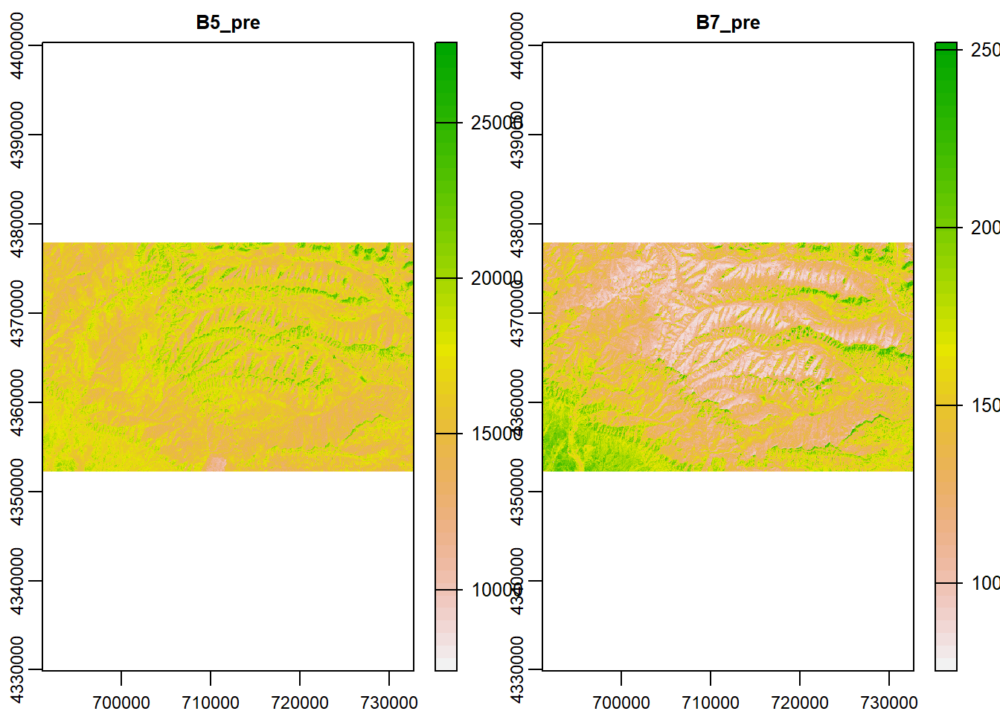
terra::plot(PG_postC)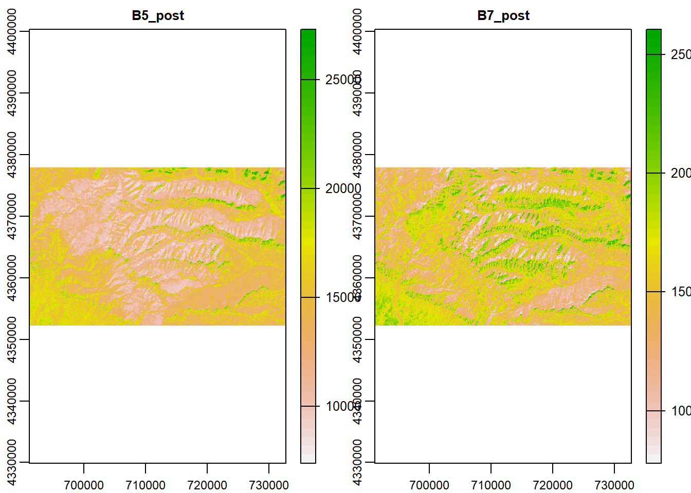
Pre-fire NBR
Now that imagery is organized, let’s develop the equation for both the pre and post-fire NBR.
nbr_pre <- ((PG_preC$B5_pre - PG_preC$B7_pre)/(PG_preC$B5_pre + PG_preC$B7_pre))
plot(nbr_pre, main = "Pre Fire")
plot(PG_v, add = T)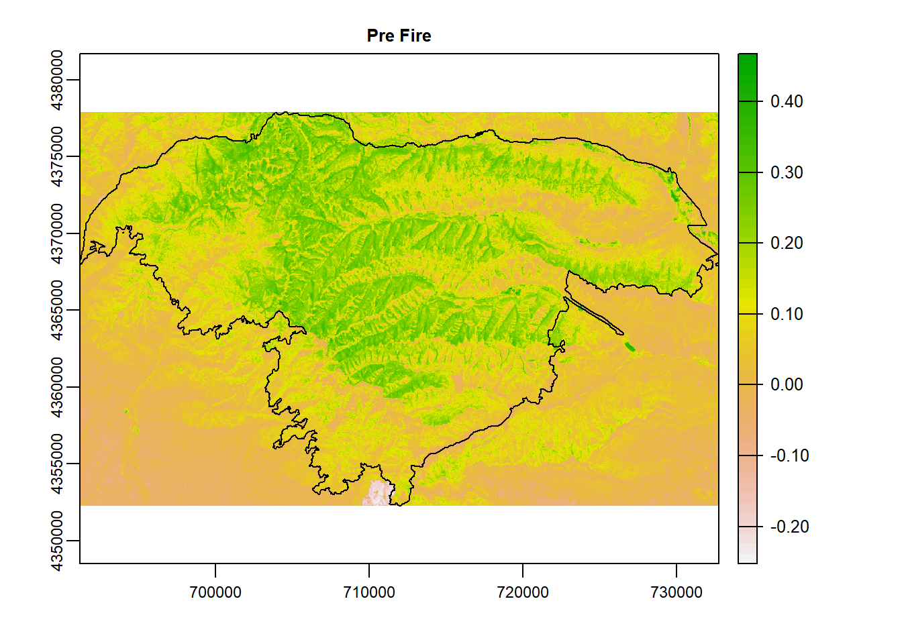
Post-fire NBR
nbr_post <- ((PG_postC$B5_post - PG_postC$B7_post)/(PG_postC$B5_post + PG_postC$B7_post))
plot(nbr_post, main = "Post Fire")
plot(PG_v, add = T)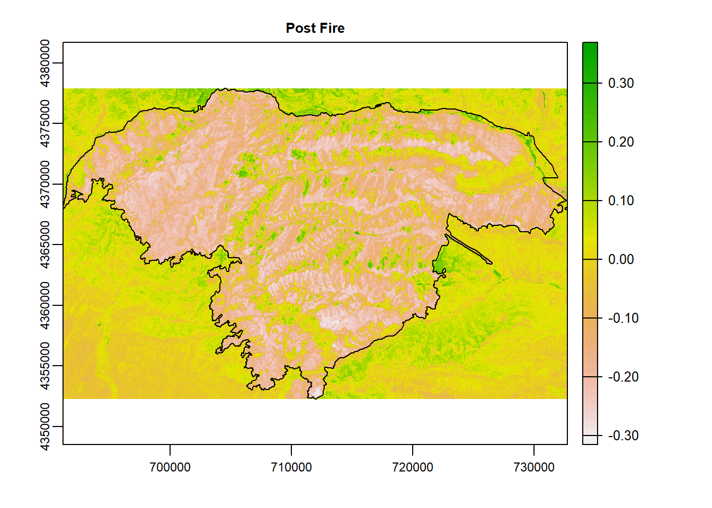
dNBI
To calculate dNBR, all we need to do is subtract post-fire NBR from pre-fire NBR.
ndbi <- nbr_pre - nbr_post # pre-post
terra::plot(ndbi)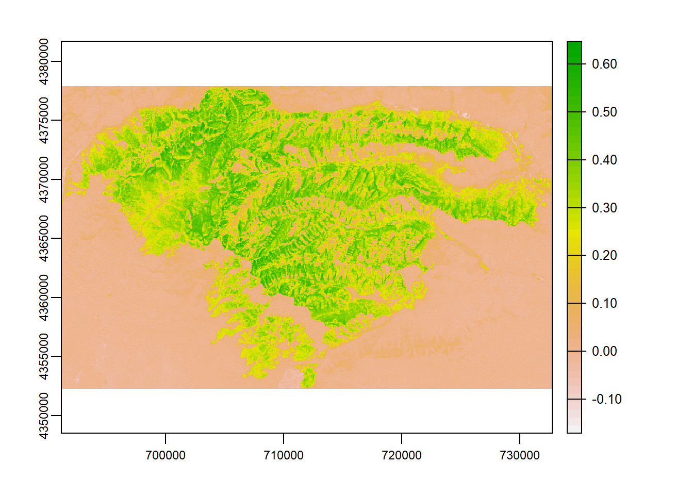
Organize and Reclassify dNBR
The output of the dNBR comes to us in a continuous scale. Also, with the default colors, we don’t immediately connect with the imagery as burn. Let’s classify our image to create classes that will assign certain values of the final product to fire severity.
ndbi <- terra::mask(ndbi, PG_v) # mask to fire for looks post analysis
ndbi_R <- as(ndbi, "Raster") # let's try it as a raster
plot(ndbi_R)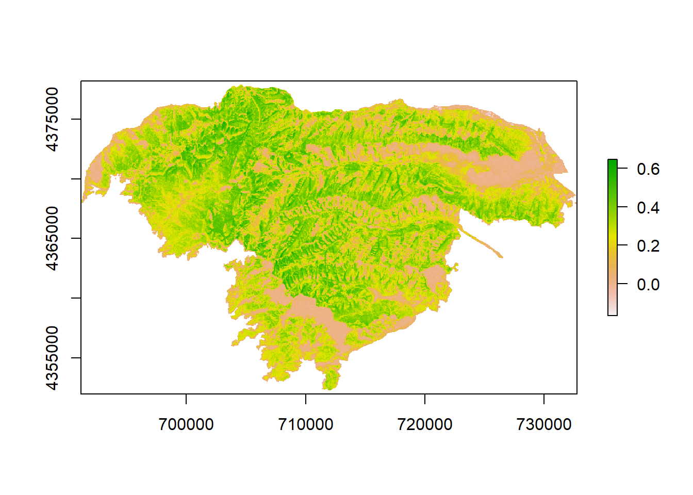
ndbi_class <- raster::reclassify(ndbi_R, # reclassify = Lower,Upper,Class#
c(-1,-.1,1, # regrowth
-.1,.1,2, # unburned
.1,.25,3, # low
.25,.5,4, # moderate
.5, 1, 5))# high
plot(ndbi_class) # plot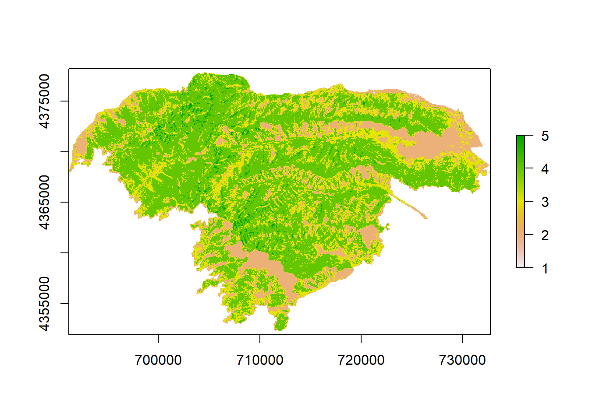
Final Plot and Cartogtaphy
Let’s give our final plot some color that we mentally associated with burned vegetation.
plot(ndbi_class,
legend = FALSE,
col = c("light green", "dark green", "yellow", "red", "purple"), axes = FALSE,
main = "Normalized Difference Burn Index - Pine Gulch Fire, Colorado",
bty = "n",
box = F) # remove plot box
legend("bottomright", # legend location
legend = c("Enhanced Regrowth", "Unburned", "Low Severity", "Medium Severity", "High Severity"),
fill = c("light green", "dark green", "yellow", "red", "purple"),
border = T,
bty = "n",
inset = c(-0.15, 0), # move legend
xpd = T) # turn off legend border
plot(PG$geometry, add = T)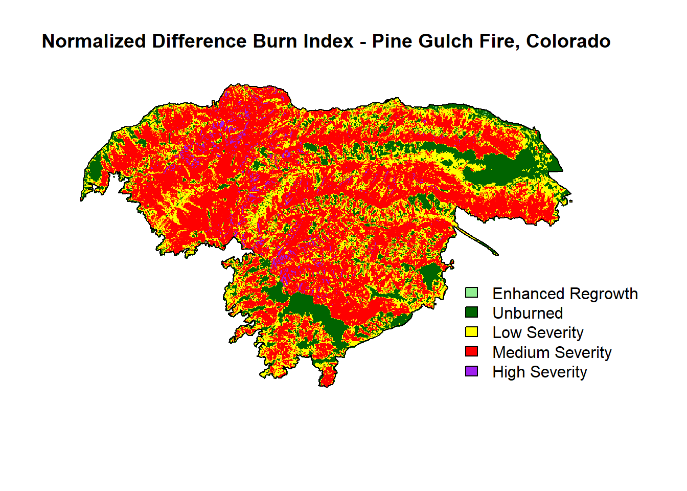